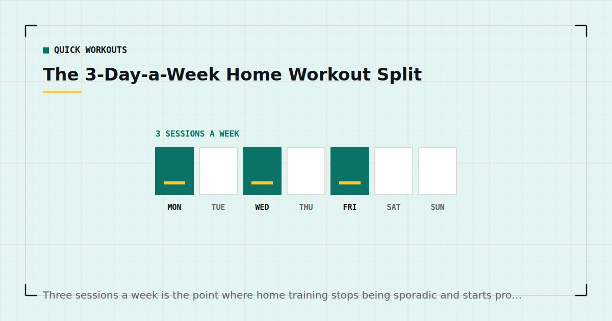

Quick Workouts & Plans
The 3-Day-a-Week Home Workout Split
Three sessions a week is the point where home training stops being sporadic and starts producing something. This is the split, the schedule, and how to progress it.

Two sessions a week maintains. Four takes more scheduling than most people with a job can sustain. Three sits in between: enough frequency to hit every muscle group twice or more across the week, few enough that a single bad evening does not wreck it.
This is a complete eight-week split using no equipment. Every session takes about thirty minutes, and each is built on the structure described in how to structure a home workout.
Why three days is the sweet spot
Two reasons, one physiological and one practical.
The physiological one: a meta-analysis of training frequency found that when weekly volume is equated, spreading it across more sessions produces similar or slightly better hypertrophy than concentrating it.1 Three sessions lets each muscle group be trained roughly twice a week without any session becoming punishingly long.
The practical one: three sessions gives you four non-training days. Miss one and you still have two, which is maintenance. Miss one from a two-day schedule and you have half a week's training. Three is the lowest frequency with genuine slack in it.
The weekly schedule
| Day | Session | Focus |
|---|---|---|
| Monday | A | Lower body and core |
| Tuesday | — | Walk or rest |
| Wednesday | B | Upper body |
| Thursday | — | Walk or rest |
| Friday | C | Full body |
| Sat / Sun | — | Rest, or something you enjoy |
The specific days do not matter. What matters is at least one day between sessions and roughly even spacing. Monday/Wednesday/Friday and Tuesday/Thursday/Saturday are equally fine; Friday/Saturday/Sunday is not, because it leaves four consecutive days untrained.
Session A: lower body and core
Warm up for five minutes first. Rest 90 seconds between sets.
Bulgarian split squat — 3 × 8–12 each leg
Rear foot on a sofa or chair. The hardest thing here, so it goes first. Setup detail in Bulgarian split squats at home.
Bodyweight squat, 3-second descent — 3 × 12–20
The slow lowering phase is the load. Do not rush it to reach a rep target.
Single-leg glute bridge — 3 × 10–15 each side
One-second pause at the top of every repetition.
Reverse lunge — 2 × 10–15 each leg
Stepping back rather than forward keeps shear off the front knee.
Dead bug — 3 × 8–12 each side
Lower back stays flat throughout. Shorten the range before you let it arch.
Session B: upper body
Pull-up or inverted row — 3 × as many as possible
If you have a doorway bar, pull-ups. If not, rows under a sturdy table — the options are in rows at home. Pulling first because most home routines badly under-train it.
Push-up — 3 × 8–15
At whichever incline gives you eight to fifteen hard repetitions. See push-up progressions.
Pike push-up — 3 × 6–12
Hips high, head travelling towards the floor between the hands. This is the closest bodyweight equivalent to an overhead press.
Chair or counter dip — 3 × 8–15
Keep the shoulders out of a deep, uncomfortable stretch. Safe setups in dips at home.
Plank shoulder tap — 3 × 30–45 seconds
Session C: full body
Shorter rest — 60 seconds — and a slightly higher-rep feel. This is the session that gets cut to twenty minutes on a bad week.
Squat — 3 × 15–25
Push-up — 3 × to two reps short of failure
Reverse lunge — 3 × 10–12 each leg
Inverted row or towel row — 3 × 8–15
Hollow hold — 3 × 20–40 seconds
How to progress over eight weeks
Do not change the exercises. Change how hard they are.
| Weeks | What changes |
|---|---|
| 1–2 | Learn the sessions. Stop 3–4 reps short of failure on everything. |
| 3–4 | Add one set to the first two exercises in each session. |
| 5–6 | Take the final set of each exercise close to failure. |
| 7–8 | Move to harder variations wherever you are at the top of the rep range. |
Track reps for the first exercise in each session. If those numbers are not moving after four weeks at the same variation and tempo, something else — sleep, food, or effort — is the limiting factor. Tracking progress without a gym covers what to record.
What to do when you miss a day
Shift, do not skip. If Wednesday's session does not happen, do it Thursday and push Friday to Saturday. The order matters more than the calendar.
If you miss a whole week, restart at the previous week's settings rather than where you left off. If you miss two or more, there is a proper approach in how to restart after missing two weeks.
Never miss two planned sessions in a row. One missed session is noise. Two is the start of a pattern, and it is the specific mechanism behind most abandoned routines — the subject of beating the six-week drop-off.
Adapting it to two or four days
Two days: run Session A and Session B only, and add one pulling and one squatting movement to each. You will progress more slowly, but two sessions a week meets the adult guideline for muscle-strengthening activity.3
Four days: switch to an upper/lower structure instead, which is covered in the upper/lower split for home training. Simply adding a fourth day to this split leaves the spacing uneven.
Why these exercises and not others
Every session here is built from five movement patterns rather than a list of body parts: squat, hinge, push, pull, and brace. Between them they cover essentially every muscle you can train without equipment, and organising by pattern rather than by muscle makes gaps obvious. If a week contains no pulling, you can see it immediately; if it contains no biceps, you probably do not care.
Three specific choices are worth explaining, because they are the ones people most often change.
Pulling comes first on upper-body day
Home routines under-train the back badly, because pushing needs nothing and pulling needs something to pull against. The result is a lot of people with respectable push-ups and almost no rowing strength, which is neither balanced nor comfortable for shoulders that already spend the day rounded forward. Putting it first is a deliberate correction.
Single-leg work instead of more squats
Two-legged bodyweight squats stop being hard fairly quickly, and the usual response is to do more of them. Thirty-rep sets are mostly a test of patience. Splitting the load onto one leg roughly doubles the demand without needing weight, which is why the split squat leads the lower-body session.
Anti-movement core work instead of sit-ups
Dead bugs, planks and hollow holds train the trunk to resist movement, which is what it spends most of its time doing when you carry, lift and stand. Sit-ups are not dangerous, but they train a narrower thing. The alternatives are set out in core training without sit-ups.
Swap within the pattern, not across it. A split squat can become a step-up or a reverse lunge; it should not become another push-up. Keeping one movement from each of the five patterns in every week is the part of this plan worth protecting.
Where to go next
If this is your first structured routine, run the 4-week beginner plan first and come to this after. If thirty minutes is more than you have, the 15-minute session can stand in for Session C.
Frequently asked questions
Is working out 3 days a week enough to build muscle?
For most people training at home, yes. Three sessions allow each muscle group to be trained about twice a week, which meta-analytic evidence suggests is at least as effective as the same weekly volume concentrated into fewer sessions.
Which days should I train on a 3-day split?
Any days with at least one rest day between sessions and reasonably even spacing. Monday, Wednesday and Friday is the common choice, but Tuesday, Thursday and Saturday works identically. Avoid stacking all three at the weekend.
Can I do this split with no equipment at all?
Yes, with one caveat: the pulling exercises need something to pull against. A doorway pull-up bar is ideal, but rows under a sturdy table or using a towel around a door handle will work.
How long should each session take?
About thirty minutes including a five-minute warm-up. Session C is deliberately shorter and can be cut to twenty minutes on a bad week without much loss.
What if I miss a workout?
Shift the schedule rather than skipping the session — the order matters more than which calendar day it lands on. The rule worth protecting is never missing two planned sessions in a row.
When should I change the exercises?
Not for at least eight weeks. Progress by making the same movements harder — more sets, closer to failure, then harder variations — rather than by swapping them out. Changing exercises frequently removes your ability to tell whether you are improving.
Sources and further reading
- Schoenfeld BJ, Ogborn D, Krieger JW. “Effects of Resistance Training Frequency on Measures of Muscle Hypertrophy: A Systematic Review and Meta-Analysis.” Sports Medicine, 2016;46(11):1689–1697. PubMed.
- Schoenfeld BJ, Ogborn D, Krieger JW. “Dose-response relationship between weekly resistance training volume and increases in muscle mass: A systematic review and meta-analysis.” Journal of Sports Sciences, 2017;35(11):1073–1082. PubMed.
- World Health Organization. WHO Guidelines on Physical Activity and Sedentary Behaviour. 2020.
- NHS. Strength and Flex exercise plan.
Comments
Comments are not enabled yet. Add a hosted comment embed (Disqus, Commento, Giscus) inside this container when you are ready.